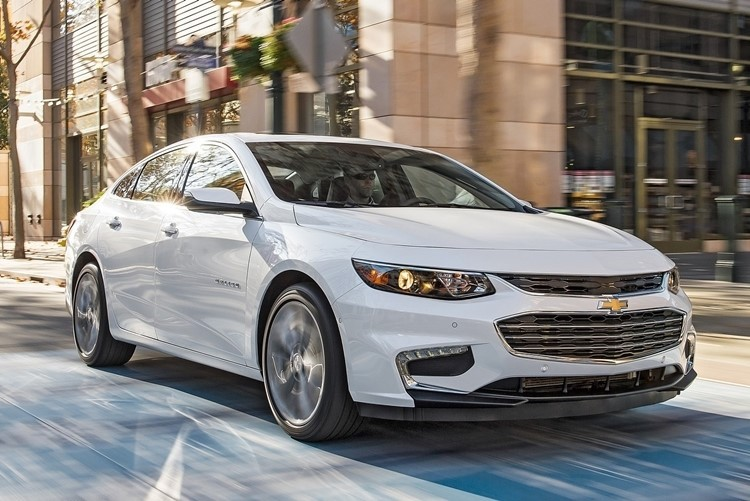

The Chevrolet Malibu is a mid-size car manufactured and marketed by Chevrolet from 1964 to 1983 and since 1997. The Malibu began as a trim-level of the Chevrolet Chevelle, becoming its own model line in 1978. Originally a rear-wheel-drive intermediate, GM revived the Malibu nameplate as a front-wheel-drive car in February 1997.

Named after the coastal community of Malibu, California, the Malibu was marketed primarily in North America, with the eighth generation introduced globally. With the discontinuation of the Chevrolet Impala in March 2020 and the Chevrolet Sonic in October 2020, the Malibu is currently the only sedan offered by Chevrolet in the U.S.